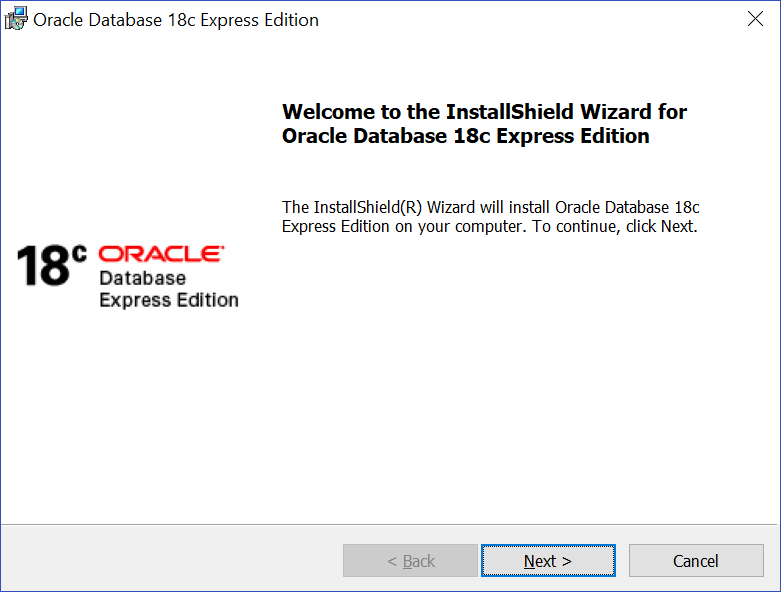
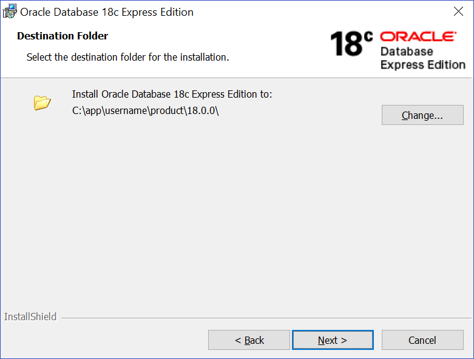
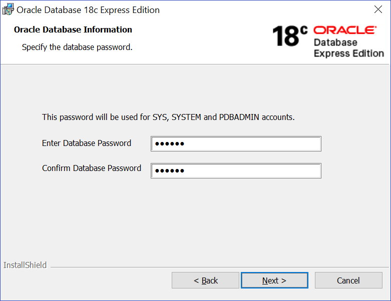
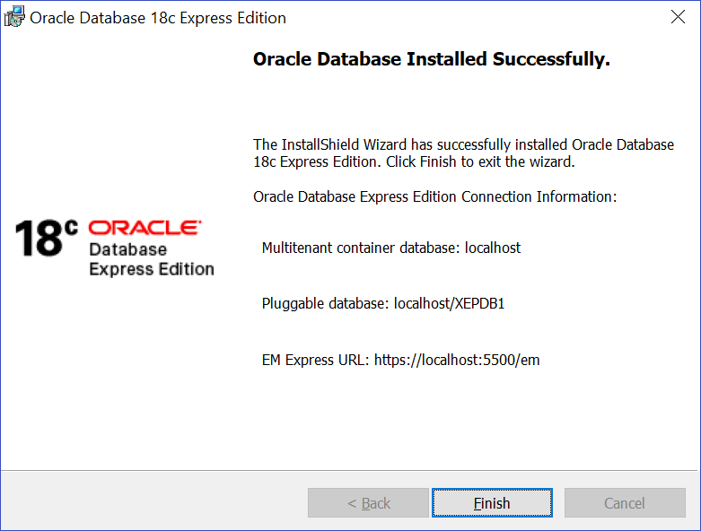

5 Installing Oracle Database XE
This section covers the following topics:
5.1 Running the Installer
Most users will install Oracle Database XE by downloading the installation package, extracting the files, double-clicking setup.exe, and answering graphical user interface prompts as needed.
Note:
- Before attempting to install Oracle Database XE 18c, uninstall any existing Oracle Database XE or database with the
SID XEfrom the target system. - Installer will use
SID XEfor database creation. AnySIDother thanSID XEwill not be allowed. - See Migrating Data and Applications if you need to move data from Oracle Database Express Edition to Oracle Database Enterprise Edition 18c.
- See Exporting and Importing Data between Oracle Database XE 11.2 and 18c if you need to move data from XE 11.2 to XE 18c.
To install Oracle Database XE:
-
Log on to Windows with
Administratorprivileges.You must be part of the
Administratorsgroup on Windows to install Oracle Database XE. If you are logged in as a domain user, ensure that you are connected to the network. Otherwise, you may receive a prerequisite check failure forAdministratorprivileges during the install. -
If the
ORACLE_HOMEenvironment variable has been set, then delete it. -
Download the Microsoft Windows version of Oracle Database XE.
-
Extract the downloaded
zipfile to a temporary location. Locatesetup.exeand double click it. -
In the Welcome to the InstallShield Wizard for Oracle Database 18c Express Edition window, click Next.
-
In the License Agreement window, read the text of the agreement and if you agree to its terms, select I accept the terms in the license agreement and then click Next. If you do not accept the terms, cancel the installation and delete the Oracle Database 18c Express Edition software from the computer.
- The installer now performs a prerequisite check to ensure that the version of Windows is supported, that the installation user has administrative privileges, and that there is no
Oracle Database XEservice already created. If any of these checks fail a Prerequisite Checks window will open notifying the user. In that case, cancel the installation, fix the problem, and retry the installation. -
In the Choose Destination Location window, either accept the default or click Change to select a different installation directory. (Do not select a directory that has spaces in its name.) Then click Next.

-
In the Specify Database Passwords window, enter and confirm the single database password to use for the
SYS,SYSTEM, andPDBADMINdatabase accounts. Then click Next.
Note:
The same password will be used for these accounts.
Oracle recommends that the password entered should be at least
12characters in length, contain at least 1 uppercase character, 1 lower case character and 1 digit [0-9]. The password should conform to the Oracle recommended standards. See Oracle Database Security Guide for more information about guidelines for securing passwords. -
In the Summary window, review the installation settings, and if you are satisfied, click Install. Otherwise, click Back and modify the settings as necessary.
-
When the installation is complete, the Oracle Database Installed Successfully window is displayed.

Make a note of the connection strings provided for multitentant container database and the pluggable database, as well as the EM Express URL. Click Finish to close the installer.
Configuration, Database Files, and Logs Location
The following table lists important locations such as Oracle Base, Oracle Home, Database files, and logs. <INSTALL_DIR> is the installation directory chosen by you during the time of install. The default installation directory is C:\app\<username>\product\18.0.0, where <username> is the name of the Windows user performing the installation.
Table 5-1 Configuration, Database Files and Logs Location
| File Name and Location | Purpose |
|---|---|
|
|
Oracle Base This is the root of the Oracle Database XE directory tree. |
|
|
Oracle Home This home is where the Oracle Database XE is installed. It contains the directories of the Oracle Database XE executables and network files. |
|
|
Database files |
|
|
Diagnostic logs The database alert log is |
|
|
Database installation, creation, and configuration logs. The |
|
|
Software installation logs. |
5.2 Performing a Silent Installation
If you plan to install Oracle Database XE on multiple computers or bundle it with a third-party application, then you may want to perform a silent installation, in which you download the installation executable and run it at a command line using the provided response files.
If you have an existing version of Oracle Database XE, you can save your data by exporting it to data files. After you install the new version of Oracle Database XE, you can import this data into the new database.
To perform a silent installation of Oracle Database XE:
-
Log on to Windows with Administrator privileges.
You must be part of the
Administratorsgroup on Windows to install Oracle Database XE. If you are logged in as a domain user, ensure that you are connected to the network. -
Download Oracle Database XE for Microsoft Windows. Extract the files to a temporary directory.
-
Open the
XEInstall.rspresponse file and modify the settings if necessary.Note:
For information on response file parameters, see Table 5-2. -
If the ORACLE_HOME environment variable has been set, then delete it.
-
Run the installation executable with the
XEInstall.rspresponse file.For example, if you extracted the
setup.exeexecutable and theXEInstall.rspfile to a directory calledxe_temp, you would enter the following command:c:\xe_temp> setup.exe /s /v"RSP_FILE=c:\xe_temp\response\XEInstall.rsp" /v"/L*v c:\xe_temp\setup.log" /v"/qn"
After the installation is complete, Oracle Database XE starts.
Response File Parameters
The following table describes the important response file parameters. The parameter value cannot be empty. You must specify a valid value for the parameters.
Table 5-2 Response File Parameters
| Parameter | Purpose | Default Value |
|---|---|---|
|
|
The install directory location. Replace |
|
|
|
The XE Database password. All users are set with this password. Reset the password immediately after the installation is complete. |
|
|
|
The listener port. |
If listener port is set to |
|
|
The EM express port. |
If EM express port is set to |
|
|
The character set of the database. |
|
Note:
After the installation is successfully completed, the following message is available in the log file that you have specified as the parameter to setup.exe. For example, c:\xe_temp\setup.log:
MSI (c) (28:B8) [Timestamp]: Windows Installer installed the product. Product Name: Oracle Database 18c Express Edition. Product Version: 18.4.0.0.0. Product Language: [Current Language ID]. Manufacturer: Oracle Corporation. Installation success or error status: 0.
Since silent install runs asynchronously, you can check the log file for the completion status.
- general logs: located at
%Program Files%\Oracle\Inventory\logs - database creation logs: located at
<Oracle_base>\cfgtoollogs